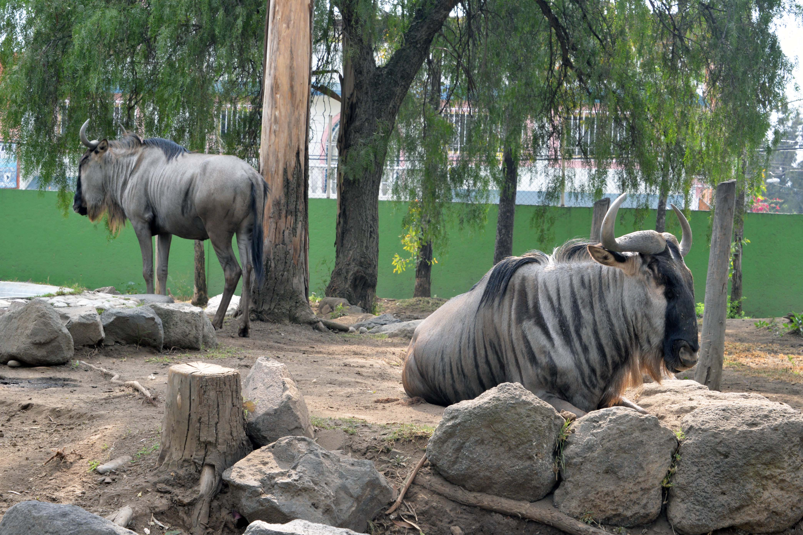

Lago de Coatepeque
Catedral de Santa Ana

Santa Ana, ubicada a 65 kilómetros de San Salvador, hoy en día es una ciudad de mucho dinamismo económico. El producto más cultivado es el café. Tiene fábricas de herramientas agrícolas, zonas francas y además cuenta con centros comerciales muy modernos y excelente infraestructura de servicios turísticos. La riqueza histórica, cultural y arqueológica de Santa Ana la hacen un destino muy atractivo. Los sitios arqueológicos Tazumal, Casablanca, Trapiche, Pampe y otros -aún sin excabar-están en este departamento occidental. La Catedral de Santa Ana fue declarada Patrimonio Cultural de El Salvador en 1995. La estructura tiene 90 metros de longitud, es de estilo gótico y bizantino. El Teatro de Santa Ana es también uno de los más hermosos y con mejor acústica en el país. Es considerada una verdadera joya arquitectónica, que fue construida en la primera década del siglo 20 e inaugurada en 1910 con una ópera de Giusseppe Verdi. Junto al Palacio Municipal y la Catedral, forma el Complejo Histórico de esta ciudad. Las fiestas patronales se celebran en honor a Nuestra Señora Santa Ana, del 1 al 26 de julio. Para más información, llame al teléfono: (503) 2441-2193.
Existe evidencia de poblamientos del período preclásico y período clásico sobre todo en el área de la cabecera municipal; en el período preclásico destaca el sitio arqueológico Finca Rosita que era el centro dominante o centro regional primario de la zona. Este y otros asentamientos fueron deshabitados por la erupción del lago de Ilopango en el 250 d. C.
Candelaria de la Frontera, Chalchuapa,Coatepeque, El Congo, El Porvenir, Masahuat, Metapán, San Antonio Pajonal, San Sebastián, Salitrillo, Santa Ana, Santa Rosa, Guachipilín, Santiago de la Frontera, Texistepeque.

Ostenta el nombre del portero Óscar Alberto Quiteño, quien murió en un partido amistoso contra el Orión de Costa Rica; el referido estadio santaneco fue nombrado como Óscar Quiteño (en honor de Óscar Alberto Quiteño) el 15 de mayo de 1977; gracias a la iniciativa del profesor Fidel Antonio Magaña..
Nació el 7 de noviembre de 1861 en Santa Ana y murió como un héroe en la batalla del Jícaro en Guatemala, el 11 de julio de 1906. Fue militar y político salvadoreño, presidente de su país (1898-1903). Regalado fue uno de los conspiradores que el 29 de abril de 1894 participó en el derrocamiento del gobierno de Carlos Ezeta, dentro del movimiento llamado de “Los 44
Uno de los músicos más prominentes de El Salvador, nació en Santa Ana, el 13 de junio de 1876. Hijo de Don Joaquín Chávez y Doña Simona Granadino. Compuso su primer vals conocido como “El Pirulí”. Su composición musical más famosa fue: el vals “Bajo el Almendro”, conocido como un himno de la Cuidad Morena. El renombrado maestro murió en su tierra querida el 22 de agosto de 1933, a la edad de 57 años. En el parque Libertad se encuentra un monumento al notable compositor..